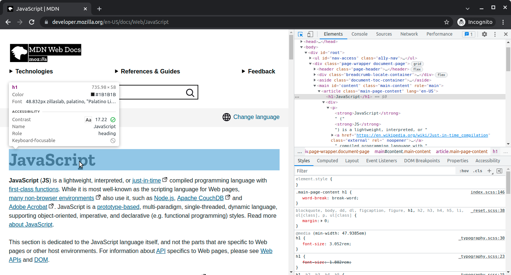
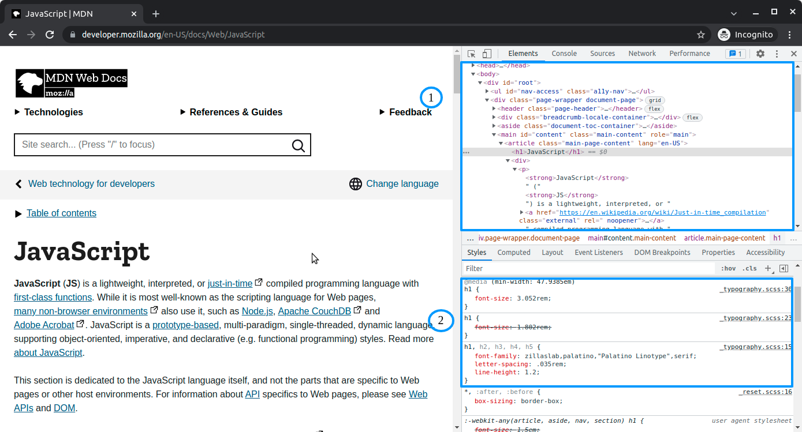
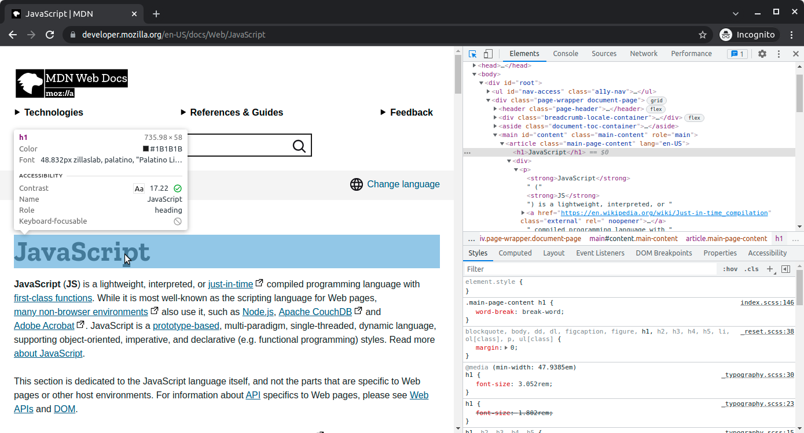
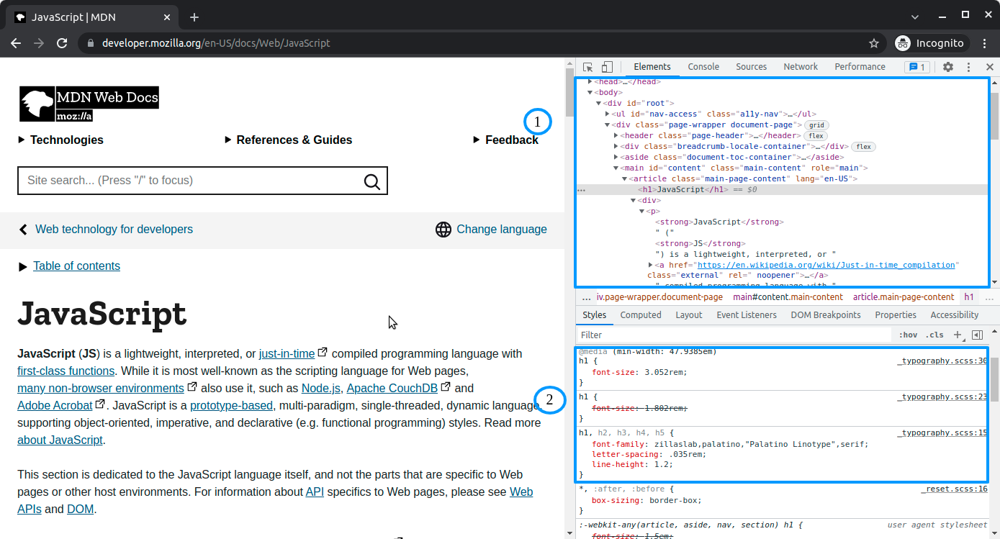
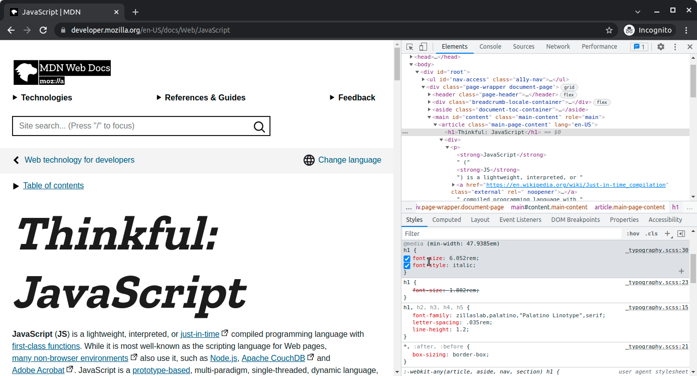
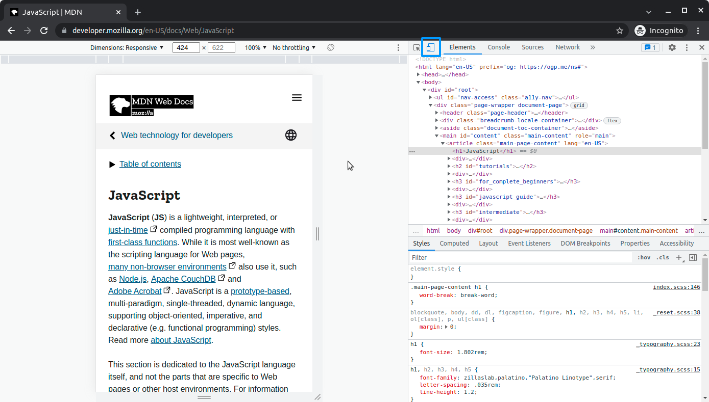
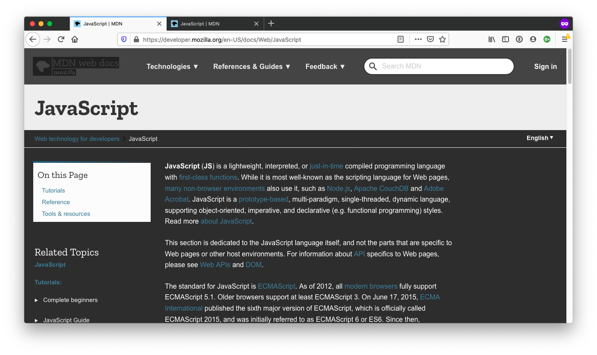

frontend development
developer tools
overview: learn some of the basics in regard to using the developer tools, which will enable you to work more efficiently with html and css
developer tools
the developer tools offer several useful features, including the following:
the element inspector, which allows you to inspect a particular element on the page
the styles tab, which allows you to see which styles have been applied to a particular elemnt
the device toolbar, which allows you to see what your website will look like on various devices
how to open the chrome developer tools
go to any website
right-click
select Inspect
 if you click the Element Inspector button (on the left), you'll get a cursor that you can use to inspect certain parts of the page
if you click the Toggle device toolbar (on the right), you'll be able to toggle the device toolbar
device toolbar is the main toolbar for the developer tools. the section directly below this tab will change depending on which tab is chosen (the elements tab is selected in the image above)
clicking the Customize and control DevTools button will allow you to chang ethe position of your developer tools
the secondary navigation will change depending on which option is selected in the main toolbar
Opening the Element inspector
after clicking the Element inspector, you'll be able to inspect a particular element on the page. Holding the pointer over anything on the page will highlight it and change the view on the Elements pane

In the above image, the "JavaScript" text has been highlighted. Underneath, you can see information about the element itself, including the class associated with it and some styles.
And in the developer tools, you can see that the Elements section has changed. There's a light blue bar over the element as it's represented on the page. Clicking the element will highlight that element in the Elements pane.

In the top section, you can see how the element fits on the page. For example, you see that the
if you click the Element Inspector button (on the left), you'll get a cursor that you can use to inspect certain parts of the page
if you click the Toggle device toolbar (on the right), you'll be able to toggle the device toolbar
device toolbar is the main toolbar for the developer tools. the section directly below this tab will change depending on which tab is chosen (the elements tab is selected in the image above)
clicking the Customize and control DevTools button will allow you to chang ethe position of your developer tools
the secondary navigation will change depending on which option is selected in the main toolbar
Opening the Element inspector
after clicking the Element inspector, you'll be able to inspect a particular element on the page. Holding the pointer over anything on the page will highlight it and change the view on the Elements pane

In the above image, the "JavaScript" text has been highlighted. Underneath, you can see information about the element itself, including the class associated with it and some styles.
And in the developer tools, you can see that the Elements section has changed. There's a light blue bar over the element as it's represented on the page. Clicking the element will highlight that element in the Elements pane.

In the top section, you can see how the element fits on the page. For example, you see that the element is nested inside of with a class of .main-page-content
In the lower section, you can see that the Style tab is showing some css that is affecting the element. For example, you can see that a specific rule that changes the font size is attached to the h1 tag.
You can use the inspector to find a particular element that's giving you problems on a page. Then, you can view its placement on the page, as well as the css that is affecting it
Editing in the inspector
Double-clicking the html element or the styles allows you to modify either.
Using the inspector like this can be a great way to test out css rules or attempt to debug a visual issue.
This image shows the same page as before, but the page has been edited to make some visual changes

Viewing css in the styles
Under the Styles tab, you can see what styles have been applied to the selected element. The styles at the top of the list are more specific to the element, while the styles further down the list are less specific.
You can "turn off" certain styles by clearing the checkbox next to each. This is a great way to debug your CSS code
Open the device toolbar
You can access the device toolbar by clicking the Toggle device toolbar button, which is circled in the image below

Clicking this button will change the perspective of the screen to that of varying devices.
By clicking the drop-down menu that reads Responsive in the above image, you can change the type of device that the page is simulating.
Learn more about Chrome's DevTools
https://developer.chrome.com/docs/devtools/
Assessment: Developer tools
Create a dark mode for MDN's JavaScript page. The page should have a dark background and light text.
